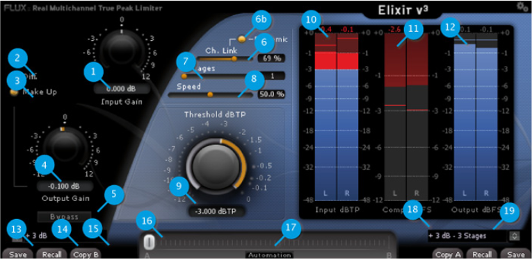

User interface
As you may notice, the controls are not the usual suspects found on a dynamics processor (I/O Gain and Threshold excepted).
Instead, the controls provided typically affect more than one parameter in the underlying algorithms, with everything carefully tweaked allowing for creative processing still ensuring the finest sound achievable.

Input / Output Section
Input Gain (1)
Control the gain applied to the limiter input.
Unit: Decibel (dB)
Range: -12.000 to +12.
Min. Steps: 0.
Default Value: 0.
Output Gain (4)
Control the gain at the output stage of the limiter.
Unit: Decibel (dB)
Range: -12.000 to +12.
Min. Steps: 0.
Default Value: 0.
Diff. (2)
Allow to hear the difference only. Used to better understand the action and allow to easily tweak the parameters.
On/Off
Default Value: Off
Make Up (3)
Apply Gain compensation. Add invert of the threshold gain to the output gain.
On/Off
Default Value: Off
Bypass (5)
Bypasses the plug-in processing by routing the input direct to the output. The actual processing is still performed in the background allowing for a true and smooth transition between the processed and the actual incoming signal.
Processing Section
Ch. Link (6)
% of channels linkage
Unit: Percent (%)
Range: 0 to 100
Min. Steps: 1
Default Value: 0
Ch. Link Dynamic (6b)
Make the channels linkage dynamic according to the signal. It means; when On, the Channel Link will automatically move from 0 when High Dynamic (High transient) are detected and the desired value when no dynamic (low transient) are detected.
Unit: On/Off
Default Value: Off
Stages (7)
Number of stages (passes or steps) used by the algorithm. Because the algorithm adapt itself to the audio material, doing multi stages allow for the processing to be even more precise and provide an even more natural sounding result. For e.g. if the threshold is set to -3 dB and Stages set to 3: First stage will limit at -1dB, Second stage will limit at -2dB and third will limit at -3dB with analyzing done for each stages!
Range: 1 to 5
Min. Steps: 1
Default Value: 1
Speed (8)
Allow to change how the algorithm will react regarding to the audio material. This will change the how the gain envelop will be generated with more or less look-ahead, release and curve smoothing. Leave it at 50% by default which will be optimal for most case. prefer increasing stages before trying to reduce it and remember that from 50% to 100 % it can generate more and more distortion…
Unit: Percent (%)
Range: 0.0 to 100.
Min. Steps: 0.
Default Value: 50.
Theshold dBTP (9)
Control the threshold (or ceiling) used for limiting.
Unit: Decibel (dB)
Range: -12.000 to 0.
Min. Steps: 0.
Default Value: 0.
Metering Section
Signal Input dBTP True Peak Meter (10)
Signal Output dBFS True Peak Meter (11)
Comp. dBFS Meter (12)
All information is displayed at a refresh rate of 60 fps (if possible) and displaying the maximum action during the processing period.
Preset management
Elixir v3 , as well as all other Flux:: plug-ins, provides two preset slots referred to as slot A and slot B, which means that you can have direct access to two sets of parameter settings simultaneously. In addition to just recall (33) the settings for each of the slots individually and alternate between their settings, a morphing slider (35) is provided offering the possibility to morph between the slots and their corresponding settings. When clicking on one of the preset slots (38), the built in preset manager appears.
The preset manager contains three preset banks, the Factory bank contains factory presets, this bank is not available for saving of presets but any of the presets can be loaded into a preset slot and then saved into, the User bank, where all user presets are saved. Finally, the Global bank, which is a bit special, here you can save a complete snapshot with all the settings from both preset slots, as well as the position of the morphing slider.
In the preset manager, any preset can be loaded into a preset slot by double clicking on the name of the desired preset in the actual preset list, the preset will then be loaded into the preset slot corresponding to the position of the morphing slider.
Additional controls in the preset manager
- Recall A loads the selected preset into the corresponding slot.
- Recall B loads the selected preset into the corresponding slot.
- Update, saves the current settings into the selected preset.
- New, saves the current settings into a new preset.
- Duplicate creates a copy of the selected preset and saves it to the list.
- Edit allows for changes to the preset meta properties.
- Delete, removes the selected preset.
- Export, creates a file reflecting the content of the current preset bank.
- Import, allows for import of a preset bank file by adding the imported banks content to the content in the current preset bank.
When saving or editing a preset, an option to protect the preset is presented. The preset protection, if engaged, only allows the original preset author to uncheck and edit the preset. This means that you can protect your presets in a multi-user configuration. Protected presets can only be modified using the session used for their creation. If used in another user session they can only be imported or deleted.
Elixir v3 Preset Controls
Save (13)
To save a new preset using the built in preset manager, simply click Save in the corresponding preset slot (A/B), and to save changes to your preset, simply click Save again.
If you want to resave your preset under a new name, open the preset manager by clicking the corresponding (A/B) preset slot (38), select New, enter a name for your preset, and press Save.
Recall (14)
Recalls the settings of the corresponding slot.
Copy A/B (15)
To copy all parameters between the preset slots (A to B or B to A), press the Copy A or Copy B button, and the parameters from the corresponding preset slot will be copied into the current preset slot. When copying parameters from one slot to another, the preset morph slider will automatically slide to the slot the parameters where copied to.
Morphing Slider (16)
The morphing slider provides mixing between the settings of slot A and B and allows for some very creative tweaking.
The result of the morphing can be saved as a global preset containing the actual settings of both preset slots as well as the morphing slider position.
To save a Global preset, open the preset manager by clicking the corresponding (A/B) preset slot (38), then click Global, select New and enter a name for your global preset, then press Save.
Automation (Morphing Slider) (17)
When enabling the Automation control button, the morphing slider will be exposed and available for both automation read and write.
Though with the button engaged, only the morphing slider value is applied when reading automation.
The Automation control button must be engaged if the morphing slider needs to be mapped on a control surface.
Preset Name (18)
Displays the name of the current preset.
Preset Slot (19)
By pressing the little arrows in the preset slot, the built in preset manager appears